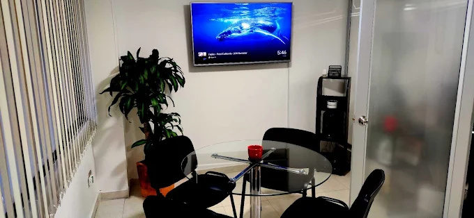
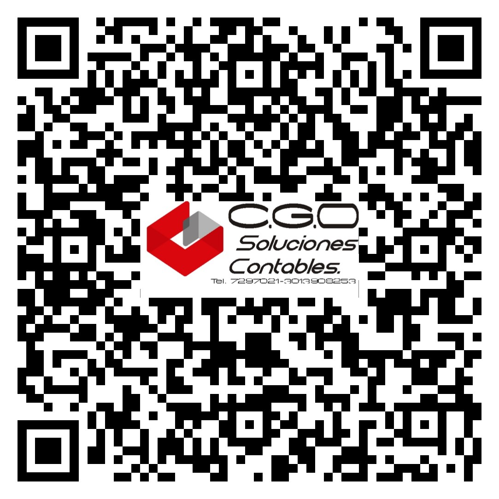
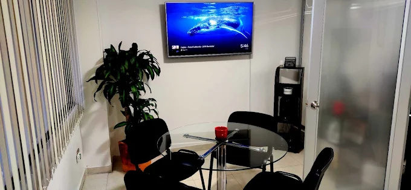
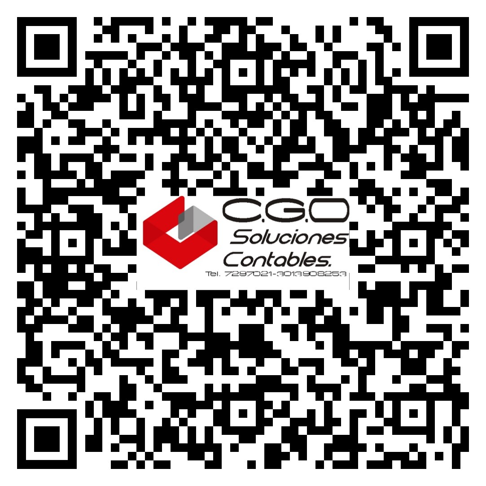

Nuestra Oficina
Contamos con un espacio profesional, moderno y cómodo para atender a nuestros clientes en la ciudad de Pasto, reflejando seriedad, confianza y organización.
Dirección:
Calle 20 # 29 – 07 Oficina 205
Pasto, Nariño – Colombia
Teléfono: 304 446 0454

 


